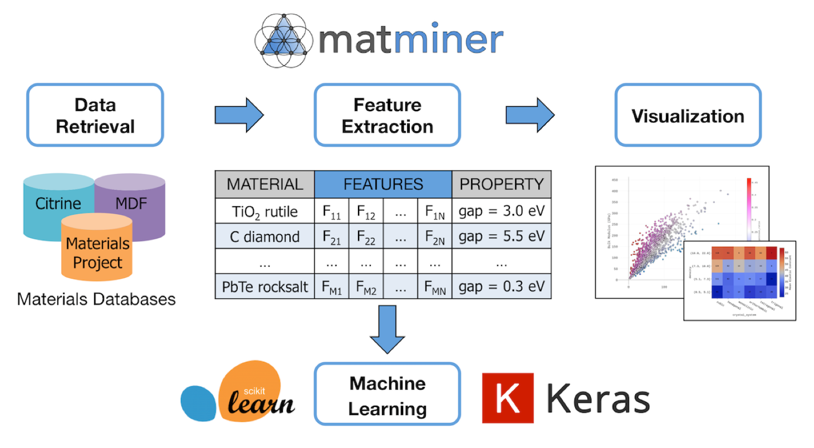

Descriptors for Materials Science
Contents
Note
This lecture is going to:
Discuss why and how we can generate descriptors for materials problems
Introduce several descriptors/features that can be used for:
chemical compositions
structure (atomic xyz structure) features
…
Demonstrate one package for generating features (matminer)
Fit a simple linear model to a material science dataset
Descriptors for Materials Science#
Firstly, what does a typical machine learning workflow look like? The overall process can be summarized as:
Take raw inputs, such as a list of compositions, and an associated target property to learn.
Convert the raw inputs into descriptors or features that can be learned by machine learning algorithms.
Train a machine learning model on the data.
Plot and analyze the performance of the model.

Typically, questions asked by a new practitioner in the field include:
Where do we get the raw data from?
How do we convert the raw data into learnable features?
How can we plot and interpret the results of a model?
The matminer package has been developed to help make machine learning of materials properties easy and hassle free. The aim of matminer is to connect materials data with data mining algorithms and data visualization.
See also
Many more tutorials on how to use matminer (beyond the scope of this workshop) are available in the matminer_examples repository, available here.

Part 1: Data retrieval and filtering#
Matminer interfaces with many materials databases, including:
Materials Project
Citrine
AFLOW
Materials Data Facility (MDF)
Materials Platform for Data Science (MPDS)
In addition, it also includes datasets from published literature. Matminer hosts a repository of 45 (and growing) datasets which comes from published and peer-reviewed machine learning investigations of materials properties or publications of high-throughput computing studies.
In this section, we will show how to access and manipulate the pre-formatted datasets from the published literature. More information on accessing other materials databases are detailed in the matminer_examples repository.
A list of the literature-based datasets can be printed using the get_available_datasets() function. This also prints information about what the dataset contains, such as the number of samples, the target properties, and how the data was obtained (e.g., via theory or experiment).
from matminer.datasets import get_available_datasets
get_available_datasets()
---------------------------------------------------------------------------
ModuleNotFoundError Traceback (most recent call last)
Cell In [1], line 1
----> 1 from matminer.datasets import get_available_datasets
3 get_available_datasets()
ModuleNotFoundError: No module named 'matminer'
All datasets can be loaded using the load_dataset() function and the database name. To save installation space, the datasets are not automatically downloaded when matminer is installed. Instead, the first time the dataset is loaded, it will be downloaded from the internet and stored in the matminer installation directory.
Let’s say we’re interested in the dielectric_constant dataset, which contains 1,056 structures with dielectric properties calculated with DFPT-PBE. We can download it with the load_dataset function.
We’ll set an environment variable MATMINER_DATA which will tell matminer to download all our dataset to a directory ./data. If you are running this locally, you usually don’t need to set this variable as matminer will download the dataset directly to your matminer source code folder.
%env MATMINER_DATA data
from matminer.datasets import load_dataset
df = load_dataset("dielectric_constant")
We can get some more detailed information about this dataset using the get_all_dataset_info(<dataset>) function from matminer.
from matminer.datasets import get_all_dataset_info
print(get_all_dataset_info("dielectric_constant"))
Manipulating and examining pandas DataFrame objects#
The datasets are made available as pandas DataFrame objects. You can think of these as a type of “spreadsheet” object in Python. DataFrames have several useful methods you can use to explore and clean the data, some of which we’ll explore below.
Dataframes are central objects for retrieving and holding data, adding features, training models, and visualizing with graphs in Python. In the rest of the lesson we will be working with them a lot.
Inspecting the dataset#
The head() function prints a summary of the first few rows of a data set. You can scroll across to see more columns. From this, it is easy to see the types of data available in in the dataset.
df.head()
Sometimes, if a dataset is very large, you will be unable to see all the available columns. Instead, you can see the full list of columns using the columns attribute:
df.columns
A pandas DataFrame includes a function called describe() that helps determine statistics for the various numerical/categorical columns in the data. Note that the describe() function only describes numerical columns by default.
Sometimes, the describe() function will reveal outliers that indicate mistakes in the data.
df.describe()
Indexing the dataset#
We can access a particular column of DataFrame by indexing the object using the column name. For example:
df["band_gap"]
You can also access multiple columns by indexing with a list of column names rather than a single column name:
Alternatively, we can access a particular row of a Dataframe using the iloc attribute.
df.iloc[100]
Filtering the dataset#
Pandas DataFrame objects make it very easy to filter the data based on a specific column. We can use the typical Python comparison operators (==, >, >=, <, etc) to filter numerical values. For example, let’s find all entries where the cell volume is greater than 580. We do this by filtering on the volume column.
Note that we first produce a boolean mask – a series of True and False depending on the comparison. We can then use the mask to filter the DataFrame.
mask = df["volume"] >= 580
df[mask]
We can use this method of filtering to clean our dataset. For example, if we only wanted our dataset to only include nonmetals (materials with a non-zero band gap), we can do this easily by filtering the band_gap column.
mask = df["band_gap"] > 0
nonmetal_df = df[mask]
nonmetal_df
Often, a dataset contains many additional columns that are not necessary for machine learning. Before we can train a model on the data, we need to remove any extraneous columns. We can remove whole columns from the dataset using the drop() function. This function can be used to drop both rows and columns.
The function takes a list of items to drop. For columns, this is column names whereas for rows it is the row number. Finally, the axis option specifies whether the data to drop is columns (1) or rows (0).
For example, to remove the nsites, space_group, e_electronic, and e_total columns, we can run:
cleaned_df = df.drop(["nsites", "space_group", "e_electronic", "e_total"], axis=1)
Let’s examine the cleaned DataFrame to see that the columns have been removed.
cleaned_df.head()
You can alternatively select multiple columns by passing in a list of column names as an index.
For example, if we’re only interested in the band_gap and structure columns, we can index with ["band_gap", "structure"]
df[["band_gap", "structure"]]
Generating new columns#
Pandas DataFrame objects also make it easy to perform simple calculations on the data. Think of this as using formulas in Excel spreadsheets. All fundamental Python math operators (such as +, -, /, and *) can be used.
For example, the dielectric dataset contains the electronic contribution to the dielectric constant (\(\epsilon_\mathrm{electronic}\), in the poly_electronic column) and the total (static) dielectric constant (\(\epsilon_\mathrm{total}\), in the poly_total column). The ionic contribution to the dataset is given by:
Below, we calculate the ionic contribution to the dielectric constant and store it in a new column called poly_ionic. This is as simple as assigning the data to the new column, even if the column doesn’t already exist.
df["poly_ionic"] = df["poly_total"] - df["poly_electronic"]
Let’s check the new data was added correctly.
df.head()
Part 2: Generating descriptors for machine learning#
In this section, we will learn a bit about how to generate machine-learning descriptors from materials objects in pymatgen. First, we’ll generate some descriptors with matminer’s “featurizers” classes. Next, we’ll use some of what we learned about dataframes in the previous section to examine our descriptors and prepare them for input to machine learning models.

Featurizers transform materials primitives into machine-learnable features#
The general idea of featurizers is that they accept a materials primitive (e.g., pymatgen Composition) and output a vector. For example:
Matminer contains featurizers for the following pymatgen objects:#
Composition
Crystal structure
Crystal sites
Bandstructure
Density of states
Depending on the featurizer, the features returned may be:#
numerical, categorical, or mixed vectors
matrices
other pymatgen objects (for further processing)
Featurizers play nice with dataframes#
Since most of the time we are working with pandas dataframes, all featurizers work natively with pandas dataframes. We’ll provide examples of this later in the lesson.
Featurizers present in matminer#
Matminer hosts over 60 featurizers, most of which are implemented from methods published in peer reviewed papers. You can find a full list of featurizers on the matminer website. All featurizers have parallelization and convenient error tolerance built into their core methods.
In this lesson, we’ll go over the main methods present in all featurizers. By the end of this unit, you will be able to generate descriptors for a wide range of materials informatics problems using one common software interface.
The featurize method and basics#
The core method of any matminer is “featurize”. This method accepts a materials object and returns a machine learning vector or matrix. Let’s see an example on a pymatgen composition:
from pymatgen.core import Composition
fe2o3 = Composition("Fe2O3")
As a trivial example, we’ll get the element fractions with the ElementFraction featurizer.
from matminer.featurizers.composition.element import ElementFraction
ef = ElementFraction()
Now we can featurize our composition.
element_fractions = ef.featurize(fe2o3)
print(element_fractions)
We’ve managed to generate features for learning, but what do they mean? One way to check is by reading the Features section in the documentation of any featurizer… but a much easier way is to use the feature_labels() method.
element_fraction_labels = ef.feature_labels()
print(element_fraction_labels)
We now see the labels in the order that we generated the features.
print(element_fraction_labels[7], element_fractions[7])
print(element_fraction_labels[25], element_fractions[25])
Featurizing dataframes#
We just generated some descriptors and their labels from an individual sample but most of the time our data is in pandas dataframes. Fortunately, matminer featurizers implement a featurize_dataframe() method which interacts natively with dataframes.
Let’s grab a new dataset from matminer and use our ElementFraction featurizer on it.
First, we download a dataset as we did in the previous unit. In this example, we’ll download a dataset of super hard materials.
from matminer.datasets.dataset_retrieval import load_dataset
df = load_dataset("brgoch_superhard_training")
df.head()
Next, we can use the featurize_dataframe() method (implemented by all featurizers) to apply ElementFraction to all of our data at once. The only required arguments are the dataframe as input and the input column name (in this case it is composition). featurize_dataframe() is parallelized by default using multiprocessing.
If we look at the dataframe, now we can see our new feature columns.
df = ef.featurize_dataframe(df, "composition")
df.head()
Structure Featurizers#
We can use the same syntax for other kinds of featurizers. Let’s now assign descriptors to a structure. We do this with the same syntax as the composition featurizers. First, let’s load a dataset containing structures.
df = load_dataset("phonon_dielectric_mp")
df.head()
Let’s calculate some basic density features of these structures using DensityFeatures.
from matminer.featurizers.structure import DensityFeatures
densityf = DensityFeatures()
densityf.feature_labels()
These are the features we will get. Now we use featurize_dataframe() to generate these features for all the samples in the dataframe. Since we are using the structures as input to the featurizer, we select the “structure” column.
Let’s examine the dataframe and see the structural features.
df = densityf.featurize_dataframe(df, "structure")
df.head()
Conversion Featurizers#
In addition to Bandstructure/DOS/Structure/Composition featurizers, matminer also provides a featurizer interface for converting between pymatgen objects (e.g., assinging oxidation states to compositions) in a fault-tolerant fashion. These featurizers are found in matminer.featurizers.conversion and work with the same featurize/featurize_dataframe etc. syntax as the other featurizers.
The dataset we loaded previously only contains a formula column with string objects. To convert this data into a composition column containing pymatgen Composition objects, we can use the StrToComposition conversion featurizer on the formula column.
from matminer.featurizers.conversions import StrToComposition
stc = StrToComposition()
df = stc.featurize_dataframe(df, "formula", pbar=False)
We can see a new composition column has been added to the dataframe.
df.head()
Advanced capabilities#
There are powerful functionalities of Featurizers which are worth quickly mentioning before we go practice (and many more not mentioned here).
Dealing with Errors#
Often, data is messy and certain featurizers will encounter errors. Set ignore_errors=True in featurize_dataframe() to skip errors; if you’d like to see the errors returned in an additional column, also set return_errors=True.
Part 3: Machine learning models#
In parts 1 and 2, we demonstrated how to download a dataset and add machine learnable features. In part 3, we show how to train a machine learning model on a dataset and analyze the results.
Scikit-Learn#
This unit makes extensive use of the scikit-learn package, an open-source python package for machine learning. Matminer has been designed to make machine learning with scikit-learn as easy as possible. Other machine learning packages exist, such as TensorFlow, which implement neural network architectures. These packages can also be used with matminer but are outside the scope of this workshop.
Load and prepare a pre-featurized model#
First, let’s load a dataset that we can use for machine learning. In advance, we’ve added some composition and structure features to the elastic_tensor_2015 dataset used in exercises 1 and 2.
import os
from matminer.utils.io import load_dataframe_from_json
df = load_dataframe_from_json(os.path.join("resources", "elastic_tensor_2015_featurized.json"))
df.head()
We first need to split the dataset into the “target” property, and the “features” used for learning. In this model, we will be using the bulk modulus (K_VRH) as the target property. We use the values attribute of the dataframe to give the target properties a numpy array, rather than pandas Series object.
y = df['K_VRH'].values
print(y)
The machine learning algorithm can only use numerical features for training. Accordingly, we need to remove any non-numerical columns from our dataset. Additionally, we want to remove the K_VRH column from the set of features, as the model should not know about the target property in advance.
The dataset loaded above, includes structure, formula, and composition columns that were previously used to generate the machine learnable features. Let’s remove them using the pandas drop() function, discussed in unit 1. Remember, axis=1 indicates we are dropping columns rather than rows.
X = df.drop(["structure", "formula", "composition", "K_VRH"], axis=1)
We can see all the descriptors in model using the column attribute.
print("There are {} possible descriptors:".format(len(X.columns)))
print(X.columns)
Try a random forest model using scikit-learn#
The scikit-learn library makes it easy to use our generated features for training machine learning models. It implements a variety of different regression models and contains tools for cross-validation.
In the interests of time, in this example we will only trial a single model but it is good practice to trial multiple models to see which performs best for your machine learning problem. A good “starting” model is the random forest model. Let’s create a random forest model.
from sklearn.ensemble import RandomForestRegressor
rf = RandomForestRegressor(n_estimators=100, random_state=1)
Notice we created the model with the number of estimators (n_estimators) set to 100. n_estimators is an example of a machine learning hyper-parameter. Most models contain many tunable hyper-parameters. To obtain good performance, it is necessary to fine tune these parameters for each individual machine learning problem. There is currently no simple way to know in advance what hyper-parameters will be optimal. Usually, a trial and error approach is used.
We can now train our model to use the input features (X) to predict the target property (y). This is achieved using the fit() function.
rf.fit(X, y)
That’s it, we have trained our first machine learning model!
Evaluating model performance#
Next, we need to assess how the model is performing. To do this, we first ask the model to predict the bulk modulus for every entry in our original dataframe.
y_pred = rf.predict(X)
Next, we can check the accuracy of our model by looking at the root mean squared error of our predictions. Scikit-learn provides a mean_squared_error() function to calculate the mean squared error. We then take the square-root of this to obtain our final performance metric.
import numpy as np
from sklearn.metrics import mean_squared_error
mse = mean_squared_error(y, y_pred)
print('training RMSE = {:.3f} GPa'.format(np.sqrt(mse)))
An RMSE of 7.2 GPa looks very reasonable! However, as the model was trained and evaluated on exactly the same data, this is not a true estimate of how the model will perform for unseen materials (the primary purpose of machine learning studies).
Cross validation#
To obtain a more accurate estimate of prediction performance and validate that we are not over-fitting, we need to check the cross-validation score rather than the fitting score.
In cross-validation, the data is partitioned randomly into \(n\) “splits” (in this case 10), each containing roughly the same number of samples. The model is trained on \(n-1\) splits (the training set) and the model performance evaluated by comparing the actual and predicted values for the final split (the testing set). In total, this process is repeated \(n\) times, such that each split is at some point used as the testing set. The cross-validation score is the average score across all testing sets.
There are a number of ways to partition the data into splits. In this example, we use the KFold method and select the number of splits to be 10. I.e., 90 % of the data will be used as the training set, with 10 % used as the testing set.
from sklearn.model_selection import KFold
kfold = KFold(n_splits=10, random_state=1, shuffle=True)
Note, we set random_state=1 to ensure every attendee gets the same answer for their model.
Finally, obtaining the cross validation score can be automated using the Scikit-Learn cross_val_score() function. This function requires a machine learning model, the input features, and target property as arguments. Note, we pass the kfold object as thecv argument, to make cross_val_score() use the correct test/train splits.
For each split, the model will be trained from scratch, before the performance is evaluated. As we have to train and predict 10 times, cross validation can often take some time to perform. In our case, the model is quite small, so the process only takes about a minute. The final cross validation score is the average across all splits.
from sklearn.model_selection import cross_val_score
scores = cross_val_score(rf, X, y, scoring='neg_mean_squared_error', cv=kfold)
rmse_scores = [np.sqrt(abs(s)) for s in scores]
print('Mean RMSE: {:.3f}'.format(np.mean(rmse_scores)))
Notice that our RMSE has almost tripled as now it reflects the true predictive power of the model. However, a root-mean-squared error of ~19 GPa is still not bad!
Visualizing model performance#
We can visualize the predictive performance of our model by plotting the our predictions against the actual value, for each sample in the test set for all test/train splits. First, we get the predicted values of the testing set for each split using the cross_val_predict method. This is similar to the cross_val_score method, except it returns the actual predictions, rather than the model score.
from sklearn.model_selection import cross_val_predict
y_pred = cross_val_predict(rf, X, y, cv=kfold)
Let’s now add our predicted values to our dataframe and calculate an absolute percentage error for each sample.
We can do this conveniently for all of our samples with the dataframe columns.
If we scroll to the end of the dataframe, our predicted K_VRH and percentage errors are given for each sample. This might allow us to examine manually which samples are performing well and which are performing poorly.
df["K_VRH predicted"] = y_pred
df["percentage_error"] = (df["K_VRH"] - df["K_VRH predicted"]).abs()/df["K_VRH"] * 100
df
A more convient way of examining our model’s performance is by creating a graph comparing our cross-validation predicted bulk modulus to the actual bulk modulus for every sample. Here, we use plotly.express from the Plotly package to create our graphs.
Plotly Express is designed to create many kinds of plots directly from dataframes. Since we already have our data inside a dataframe, we can specify the column names to tell Plotly the data we’d like to show.
We make two series of data:
First, a reference line indicating “perfect” peformance of the model.
Second, a scatter plot of the predicted K_VRH vs the actual K_VRH for every sample.
import plotly.express as px
import plotly.graph_objects as go
reference_line = go.Scatter(
x=[0, 400],
y=[0, 400],
line=dict(color="black", dash="dash"),
mode="lines",
showlegend=False
)
fig = px.scatter(
df,
x="K_VRH",
y="K_VRH predicted",
hover_name="formula",
color="percentage_error",
color_continuous_scale=px.colors.sequential.Bluered,
)
fig.add_trace(reference_line)
fig.show()
Not too bad! However, there are definitely some outliers (you can hover over the points with your mouse to see what they are).
Model interpretation#
An important aspect of machine learning is being able to understand why a model is making certain predictions. Random forest models are particularly amenable to interpretation as they possess a feature_importances attribute, which contains the importance of each feature in deciding the final prediction. Let’s look at the feature importances of our model.
rf.feature_importances_
To make sense of this, we need to know which feature each number corresponds to. We can use PlotlyFig to plot the importances of the 5 most important features.
importances = rf.feature_importances_
included = X.columns.values
indices = np.argsort(importances)[::-1]
fig_bar = px.bar(
x=included[indices][0:5],
y=importances[indices][0:5],
title="Feature Importances of Random Forest",
labels={"x": "Feature", "y": "Importance"}
)
fig_bar.show()
Bonus: Curated ML datasets with Matbench#
If you are interested in comparing your machine learning algorithms with the state of the art, matminer also offers access to a curated set of 13 benchmarking datasets called Matbench, which have been used to benchmark SoTA algorithms like RooSt, CGCNN, CRABNet, MEGNet, Automatminer, and more.

The Matbench datasets span a wide variety of materials informatics tasks such as:
Predicting materials properties given only composition, or given composition and structure
Predicting a wide array of target properties, such as elastic constants, dielectric constants, formation energies, and steel yield strength
Data-sparse tasks (300 samples) and (relatively) data-rich tasks (100k+ samples)
Both regression and classification tasks
The full set of datasets is given in the table below:
Task name |
Task type |
Target column (unit) |
Input type |
Samples |
MAD (regression) or Fraction True (classification) |
Links |
|---|---|---|---|---|---|---|
|
regression |
|
composition |
312 |
229.3743 |
|
|
regression |
|
structure |
636 |
67.2020 |
|
|
regression |
|
structure |
1,265 |
323.7870 |
|
|
regression |
|
composition |
4,604 |
1.1432 |
|
|
regression |
|
structure |
4,764 |
0.8085 |
|
|
classification |
|
composition |
4,921 |
0.4981 |
|
|
classification |
|
composition |
5,680 |
0.7104 |
|
|
regression |
|
structure |
10,987 |
0.2931 |
|
|
regression |
|
structure |
10,987 |
0.2897 |
|
|
regression |
|
structure |
18,928 |
0.5660 |
|
|
regression |
|
structure |
106,113 |
1.3271 |
|
|
classification |
|
structure |
106,113 |
0.4349 |
|
|
regression |
|
structure |
132,752 |
1.0059 |
You can click on the “download” links above to download the raw files, or alternatively click on “interactive” to explore the datasets on MPContribs (note: you must be logged in to MPContribs to see the data).

Loading Matbench datasets with Matminer#
We can easily load and examine any of these datasets using the exact same load_dataset function we have used throughout this lesson in matminer. Let’s look at the smallest of the matbench datasets, matbench_steels, which has 312 samples and contains chemical compositions and yield strengths in MPa as the target property.
from matminer.datasets import load_dataset
df = load_dataset("matbench_steels")
All Matbench datasets are reduced to the minimum possible format, including a single column for input (either structure or composition) and a single target property (a number for regression or a bool for binary classification).
If we use the get_all_dataset_info we can examine some more about where this data came from, how it was edited into this form, as well as the meaning of columns.
from matminer.datasets import get_all_dataset_info
info = get_all_dataset_info("matbench_steels")
print(info)
The Matbench Leaderboard and Benchmarking Code#
We host an online benchmark leaderboard - similar to an “ImageNet” for materials science - at the following URL:
https://hackingmaterials.lbl.gov/matbench#
Which contains comprehensive data on various SoTA algorithm’s performance across tasks in Matbench. On the website you can find:
A general purpose leaderboard comparing only the most-widely applicable algorithms
Individual per-task (per-dataset) leaderboards for comparing any ML model on a particular task
Comprehensive breakdowns of cross-validation performance, statistics, and metadata for every model
Access to individual sample predictions for each and every submission

General purpose leaderboard#
Task name |
Samples |
Algorithm |
Verified MAE (unit) or ROCAUC |
Notes |
|---|---|---|---|---|
matbench_steels |
312 |
97.4929 (MPa) |
||
matbench_jdft2d |
636 |
39.8497 (meV/atom) |
||
matbench_phonons |
1,265 |
55.1114 (cm^-1) |
||
matbench_expt_gap |
4,604 |
0.3463 (eV) |
||
matbench_dielectric |
4,764 |
0.3150 (unitless) |
||
matbench_expt_is_metal |
4,921 |
0.9209 |
||
matbench_glass |
5,680 |
0.8607 |
||
matbench_log_gvrh |
10,987 |
0.0874 (log10(GPa)) |
||
matbench_log_kvrh |
10,987 |
0.0647 (log10(GPa)) |
||
matbench_perovskites |
18,928 |
0.0452 (eV/unit cell) |
structure required |
|
matbench_mp_gap |
106,113 |
0.2655 (eV) |
||
matbench_mp_is_metal |
106,113 |
0.9520 |
structure required |
|
matbench_mp_e_form |
132,752 |
0.0337 (eV/atom) |
structure required |